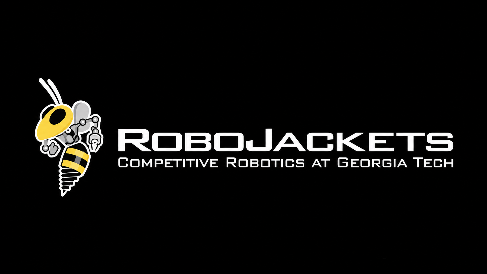
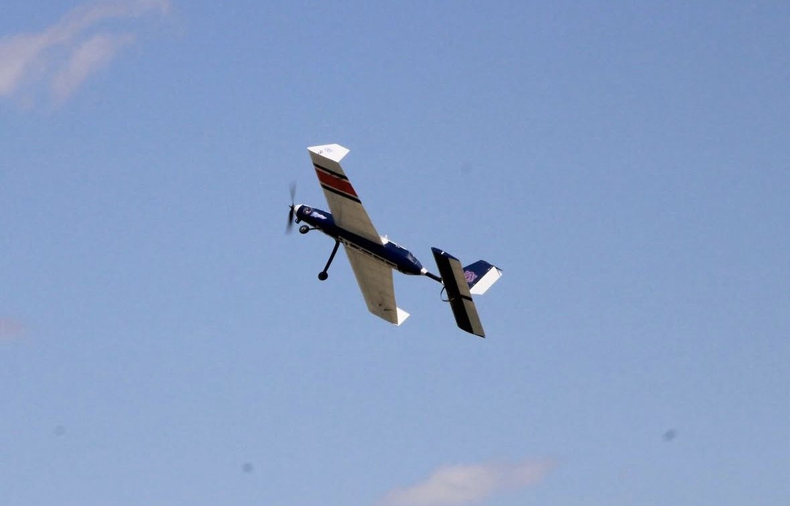

Projects

ESP32EmbeddedIn progress
Open Wake Switch
Discovery Project. An ESP32 and servo that flips a light switch at a set time.

ArduinoWiringIn progress
RoboJackets Mini Rover
Drew the electrical diagram and soldered the wiring for our team's Bluetooth-controlled rover in the RoboJackets Mini Rover Challenge.

TestingPropulsionExcel
Propeller testing, Auburn DBF
Compared three propellers with static, 45 to 65 mph dynamic, and battery tests to choose the propeller for a banner-towing plane.

WebLive demoAI-assisted
Digital SAT Math Analysis
Turns a Google Forms exam export into charts and a PDF report for each student. It cut about three hours of manual work for a class of 15 to about five minutes.